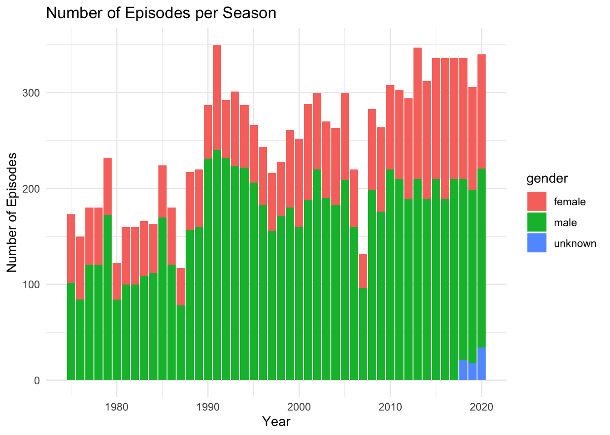

library(tidyverse)
library(ggplot2)
library(readr)
library(dplyr)
knitr::opts_chunk$set(echo = TRUE, warning=FALSE, message=FALSE)Challenge 8_PriyankaThatikonda
challenge_8
railroads
snl
faostat
debt
Joining Data
Challenge Overview
Today’s challenge is to:
- read in multiple data sets, and describe the data set using both words and any supporting information (e.g., tables, etc)
- tidy data (as needed, including sanity checks)
- mutate variables as needed (including sanity checks)
- join two or more data sets and analyze some aspect of the joined data
(be sure to only include the category tags for the data you use!)
Read in data
Read in one (or more) of the following datasets, using the correct R package and command.
- military marriages ⭐⭐
- faostat ⭐⭐
- railroads ⭐⭐⭐
- fed_rate ⭐⭐⭐
- debt ⭐⭐⭐
- us_hh ⭐⭐⭐⭐
- snl ⭐⭐⭐⭐⭐
actors <- read_csv("_data/snl_actors.csv")
casts <- read_csv("_data/snl_casts.csv")
seasons <- read_csv("_data/snl_seasons.csv")
head(actors)# A tibble: 6 × 4
aid url type gender
<chr> <chr> <chr> <chr>
1 Kate McKinnon /Cast/?KaMc cast female
2 Alex Moffat /Cast/?AlMo cast male
3 Ego Nwodim /Cast/?EgNw cast unknown
4 Chris Redd /Cast/?ChRe cast male
5 Kenan Thompson /Cast/?KeTh cast male
6 Carey Mulligan /Guests/?3677 guest andy colnames(actors)[1] "aid" "url" "type" "gender"head(casts)# A tibble: 6 × 8
aid sid featured first_epid last_epid update_…¹ n_epi…² seaso…³
<chr> <dbl> <lgl> <dbl> <dbl> <lgl> <dbl> <dbl>
1 A. Whitney Brown 11 TRUE 19860222 NA FALSE 8 0.444
2 A. Whitney Brown 12 TRUE NA NA FALSE 20 1
3 A. Whitney Brown 13 TRUE NA NA FALSE 13 1
4 A. Whitney Brown 14 TRUE NA NA FALSE 20 1
5 A. Whitney Brown 15 TRUE NA NA FALSE 20 1
6 A. Whitney Brown 16 TRUE NA NA FALSE 20 1
# … with abbreviated variable names ¹update_anchor, ²n_episodes,
# ³season_fractioncolnames(casts)[1] "aid" "sid" "featured" "first_epid"
[5] "last_epid" "update_anchor" "n_episodes" "season_fraction"head(seasons)# A tibble: 6 × 5
sid year first_epid last_epid n_episodes
<dbl> <dbl> <dbl> <dbl> <dbl>
1 1 1975 19751011 19760731 24
2 2 1976 19760918 19770521 22
3 3 1977 19770924 19780520 20
4 4 1978 19781007 19790526 20
5 5 1979 19791013 19800524 20
6 6 1980 19801115 19810411 13colnames(seasons)[1] "sid" "year" "first_epid" "last_epid" "n_episodes"dim(actors)[1] 2306 4dim(casts)[1] 614 8dim(seasons)[1] 46 5Briefly describe the data
The datasets provided contain comprehensive information about the popular television program - Saturday Night Live (SNL). The snl_casts dataset focuses on the casting details of actors across different episodes and seasons. On the other hand, the snl_seasons dataset provides specific information about each season, including episode counts, air dates, and start years. Lastly, the snl_actors dataset offers insights into individual actors’ roles and appearance types in SNL. The actors dataset comprises 2306 rows and 4 columns, while the casts dataset consists of 614 rows and 8 columns. In contrast, the seasons dataset has 46 rows and 5 columns, offering a concise overview of each season’s key details.
Tidy Data (as needed)
Is your data already tidy, or is there work to be done? Be sure to anticipate your end result to provide a sanity check, and document your work here.
#check for any missing data in the datasets
sum(is.na(actors))[1] 57sum(is.na(casts))[1] 1161sum(is.na(seasons))[1] 0seasons <- mutate(seasons,first_epid = as.Date(as.character(first_epid),format="%Y%m%d"), last_epid = as.Date(as.character(last_epid), format = "%Y%m%d"))
table(seasons$first_epid)
1975-10-11 1976-09-18 1977-09-24 1978-10-07 1979-10-13 1980-11-15 1981-10-03
1 1 1 1 1 1 1
1982-09-25 1983-10-08 1984-10-06 1985-11-09 1986-10-11 1987-10-17 1988-10-08
1 1 1 1 1 1 1
1989-09-30 1990-09-29 1991-09-28 1992-09-26 1993-09-25 1994-09-24 1995-09-30
1 1 1 1 1 1 1
1996-09-28 1997-09-27 1998-09-26 1999-10-02 2000-10-07 2001-09-29 2002-10-05
1 1 1 1 1 1 1
2003-10-04 2004-10-02 2005-10-01 2006-09-30 2007-09-29 2008-09-13 2009-09-26
1 1 1 1 1 1 1
2010-09-25 2011-09-24 2012-09-15 2013-09-28 2014-09-27 2015-10-03 2016-10-01
1 1 1 1 1 1 1
2017-09-30 2018-09-29 2019-09-28 2020-10-03
1 1 1 1 casts <- mutate(casts,first_epid = as.Date(as.character(first_epid),format="%Y%m%d"), last_epid = as.Date(as.character(last_epid), format = "%Y%m%d"))
table(casts$first_epid)
1977-01-15 1979-10-13 1979-11-17 1979-12-15 1980-01-26 1980-04-09 1980-12-13
1 1 2 1 3 2 3
1980-12-20 1981-04-11 1986-02-22 1986-03-22 1989-01-21 1989-03-25 1990-10-27
1 5 1 1 1 1 1
1990-11-10 1991-02-09 1991-11-16 1993-10-02 1993-10-09 1994-03-12 1995-01-14
2 2 2 1 2 1 1
1995-02-25 1995-04-08 1996-03-16 1999-10-23 2000-05-06 2002-03-02 2005-05-07
1 1 1 1 1 1 1
2005-11-12 2008-02-23 2008-11-15 2012-04-07 2014-01-18 2014-03-01 2014-10-25
1 1 2 1 1 1 1 Are there any variables that require mutation to be usable in your analysis stream? For example, do you need to calculate new values in order to graph them? Can string values be represented numerically? Do you need to turn any variables into factors and reorder for ease of graphics and visualization?
Document your work here.
Join Data
Be sure to include a sanity check, and double-check that case count is correct!
seasons_casts <- seasons %>% left_join(casts,by="sid")
#sanity check
seasons_casts# A tibble: 614 × 12
sid year first_ep…¹ last_epi…² n_epi…³ aid featu…⁴ first_ep…⁵ last_epi…⁶
<dbl> <dbl> <date> <date> <dbl> <chr> <lgl> <date> <date>
1 1 1975 1975-10-11 1976-07-31 24 Gild… FALSE NA NA
2 1 1975 1975-10-11 1976-07-31 24 Mich… FALSE NA 1975-11-08
3 1 1975 1975-10-11 1976-07-31 24 Lara… FALSE NA NA
4 1 1975 1975-10-11 1976-07-31 24 Garr… FALSE NA NA
5 1 1975 1975-10-11 1976-07-31 24 Jane… FALSE NA NA
6 1 1975 1975-10-11 1976-07-31 24 Geor… FALSE NA 1975-10-11
7 1 1975 1975-10-11 1976-07-31 24 Chev… FALSE NA NA
8 1 1975 1975-10-11 1976-07-31 24 John… FALSE NA NA
9 1 1975 1975-10-11 1976-07-31 24 Dan … FALSE NA NA
10 2 1976 1976-09-18 1977-05-21 22 Gild… FALSE NA NA
# … with 604 more rows, 3 more variables: update_anchor <lgl>,
# n_episodes.y <dbl>, season_fraction <dbl>, and abbreviated variable names
# ¹first_epid.x, ²last_epid.x, ³n_episodes.x, ⁴featured, ⁵first_epid.y,
# ⁶last_epid.ycolnames(seasons_casts) [1] "sid" "year" "first_epid.x" "last_epid.x"
[5] "n_episodes.x" "aid" "featured" "first_epid.y"
[9] "last_epid.y" "update_anchor" "n_episodes.y" "season_fraction"seasons_casts_actors <- seasons_casts %>% left_join(actors, by = "aid")
#sanity check seasons_casts_actors
ggplot(data = seasons_casts_actors, aes(x = year, y = n_episodes.y, fill = gender)) + geom_bar(stat = "identity") + labs(x = "Year", y = "Number of Episodes", title = "Number of Episodes per Season") + theme_minimal()